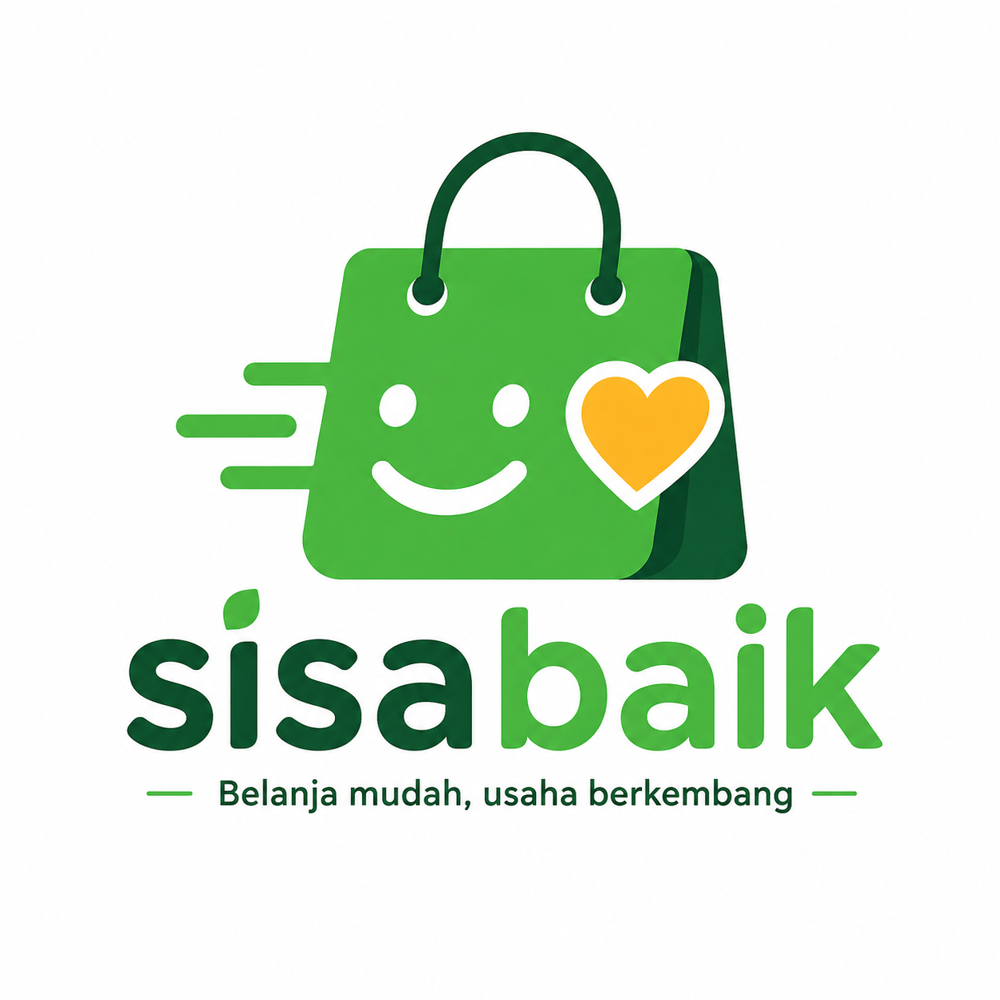

Manfaat bagi Penyedia
Manfaat bagi Penyedia
Penyedia dapat mengurangi limbah makanan dan mendapatkan pendapatan tambahan dari makanan berlebih mereka.
SisaBaik

SisaBaik mempertemukan penyedia yang memiliki stok makanan layak konsumsi dengan pembeli atau penerima yang membutuhkannya.
Penyedia dapat mengurangi limbah makanan dan mendapatkan pendapatan tambahan dari makanan berlebih mereka.
Membuka akses
Mengurangi limbah makanan dan membantu masyarakat yang membutuhkan.
Seluruh data berikut bersifat fiktif untuk keperluan pembelajaran.
Penyedia: Toko Roti Enak
Lokasi: Jl. Merdeka No. 10, Jakarta
Harga: Rp 25.000 Rp 10.000
Batas Pengambilan:
sisabaik hanya ditunjukan untuk makanan yang masih layak dikonsumsi.Penyedia bertanggung jawab atas keamanan pangan yang ditawarkan.